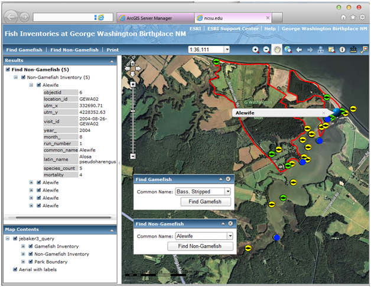
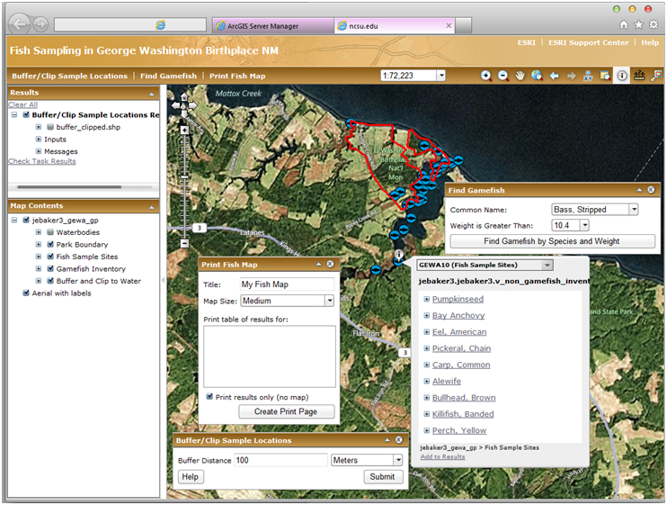
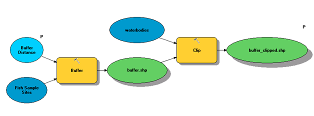
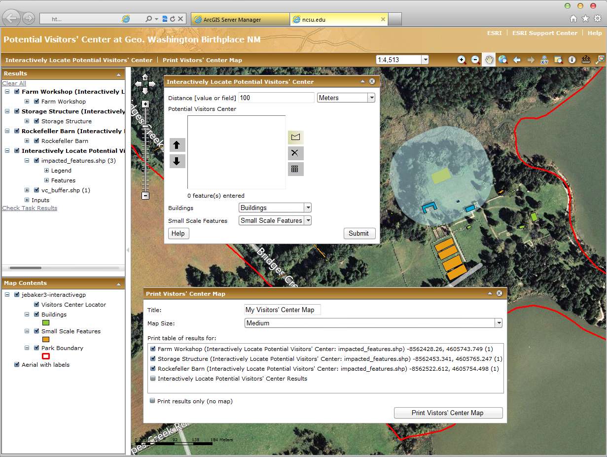
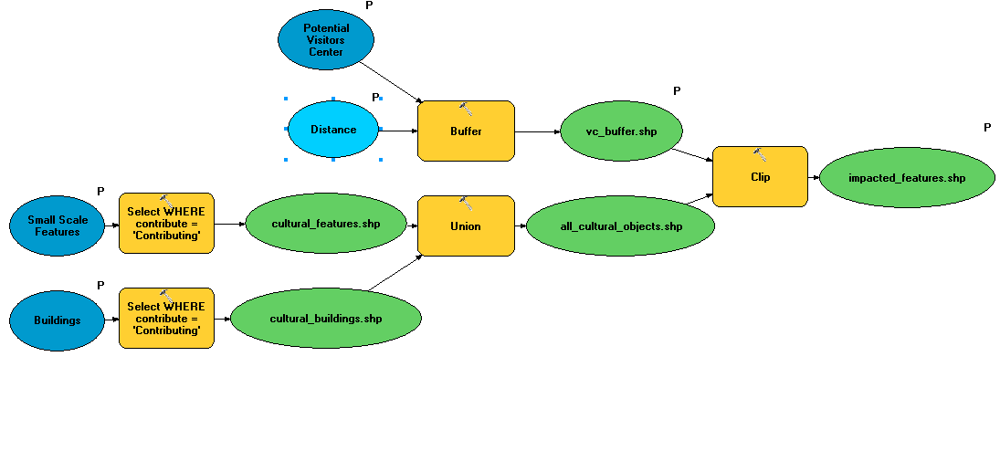

Commercial Web Delivery
We explored two different methods for web-based delivery of GIS maps through an ESRI environment in this course. The first was through ArcGIS Server, and built upon the work we had done previously in SQL and database design. The second method was through ArcGIS.com, which although allowed for less customization and fewer features, was a simpler system to use and allowed for sharing of static maps or maps using only external services without the need for maintaining your own server system. Both systems over considerable advantages over traditional GIS dissemination systems. Unlike desktop GIS software, they are much easier to use, and even someone with no prior GIS background would likely have a relatively easy time using them. And unlike static maps, whether electronic or paper-based, they allow for considerably more interaction from the end user.
ArcGIS Server
We built upon the work we had done previously in the George Washington Birthplace National Monument to allow users to investigate our data in a number of ways, view them in the context of additional data provided from other sources, and even run their own analysis. While the web applications created for this course will likely not exist past the end of the semester, images of these functional applications are provided below with a basic description of their functionality.
Query & Display Application
The application below is the first, and simplest, of those created for this course. It allows the used to identify fish samples occurring at various sampling locations found within our site, as well as various pieces of information which may be of relevance to the researcher. By using a custom-created view, information from multiple tables is combined, and only the pieces which are needed are show. You can also a background image, provided through Bing, which is an external service integrated into this project. In additional to simple background imagery, there are a number of external services from various providers available on the internet which can easily be incorporated into a project like this to provide additional information or context.

Geoprocessing Services
Below is the second ArcGIS Server application created. In this example, a simple geoprocessing service was created to allow the user to buffer the sampling locations by a set distance, and then clipped this buffer to the extent of the waterbodies. This might be useful, for example, to visually analyze how much water area surrounded each sampling site. Gamefish could also be search for by weight, allowing greater querying capabilities to the end user. Finally, a print function was included to allow users to print copies of their results. All dialog boxes created for this process are illustrated below.

(click to enlarge)
Geoprocessing in the ArcGIS Server environment is actually quite similar to in the Desktop environment, and we actually used Model Builder within ArcGIS Desktop to build our model for analyis. The model for this application is show below.

Interactive Geoprocessing Services
The final project we built in the section of the course provided a more robust and interactive geoprocessing tool to the end user. This application was developed to allow the user to site a potential visitors' center at the George Washington Birthplace National Monument, while taking into account culturally significant features which may be disturbed within a given buffer from the site. Users can draw the potential location, and define the buffer distance, allowing a much more interactive experience than our previous application.

(click to enlarge)
Our geoprocessing model for this application was considerably more complex than the previous application, but still fairly easy to follow.

(click to enlarge)
ArcGIS.com
Also in this section of the course, we explored using ArcGIS.com for map sharing. For this assignment, I created an online map using ArcGIS Online to display information relevant to George Washington Birthplace National Monument. Included on the map are the fish inventories and park boundaries served from virginislands.cnr.ncsu.edu and created in a prior assignment. Fish inventories are clickable and the user can cycle through all fish located at each point on the map. Also included is a wetlands inventory I found through ArcGIS Online, which is similar to the wetlands layer I had included in a previous assignment as well. I restricted this service to the types appropriate to the location to keep the information relevant and the legend concise. I also enabled popups for this layer, as it allowed each wetland area to be clicked on to determine area and wetland type.
In addition to these services, I also enabled a few other features. A bookmark was created at the extent of the park boundaries so that users can quickly return to this location if they zoom or pan to other parts of the map. Additionally, an editable layer was included. This layer, entitled “Places to Photograph,” highlights some key locations within the park. As others like myself may be working on this project without ever having visited the site, this enables users to identify locations that they may wish to photograph when they are able to visit – either to give context to maps or reports produced, or simply for pleasure. I included photos linked from the National Park Service website as examples.
I also experimented with a few other services but
decided not to include them. First, I tried to see if there was a
way to include a public photo feed in KML format, either from Flickr
or Panoramio or a similar service, which I thought might be
interesting to potential visitors. However, I could not get either
service to generate a feed that was localized to the specific area I
was targeting. I also tried to get radar reflectivity, and was
successful with this, but found that at the moment it did not
produce a very interesting map as there were no significant weather
events taking place in the eastern United States during the
timeframe in which the map was being created. I may explore continue
to explore using these services for a different map, though.
The map can be accessed
online currently, though the fish inventories service will
likely become unavailable following the conclusion of this course.
Reflection
When it comes to professional quality GIS software, it is clear
that ESRI is the leader of the pack, and I was glad to have this
opportunity to work with tools which allow me the opportunity to
extend some of the analysis work I had done previously on desktop
software to a wider audience through these delivery mechanisms. I
think that some of the tools available on ArcGIS.com could be
important for introducing a wider audience to GIS and help them
utilize it in a way that is meaningful to their own work. But the
most exciting part for me was using ArcGIS Server to implement
interactive geoprocessing services. So many times, as someone active
in local government I have wished for the ability to empower
individual citizens to test their hypotheses without having to place
the burden on town staff to manuallly run each simulationn.
ArcGIS Server gives that power. For example, Orange County where I
live has been struggling with siting a new landfill for decades now,
with our current landfill set to be closed in just over a year.
Often citizens, elected officials, and advocacy groups come up with
a set of criteria (distance from schools, type of road it would sit
on, distance from population centers, conflicts with environmental
resources) that they want to prioritize, but with no way to see
which areas might meet their stated desires. A well done application
in ArcGIS Server could allow each of these groups to test their
ideas quickly and easily without prior GIS experience.

{kind=link}
{kind=link}
{kind=link}